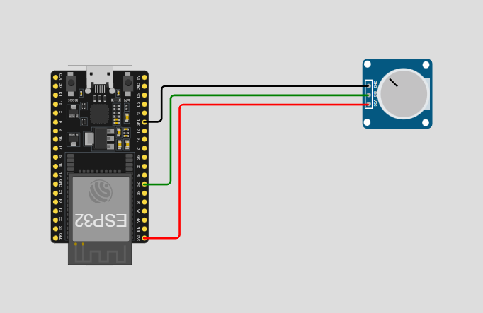
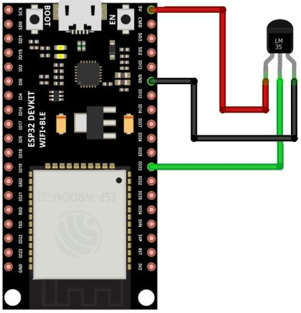
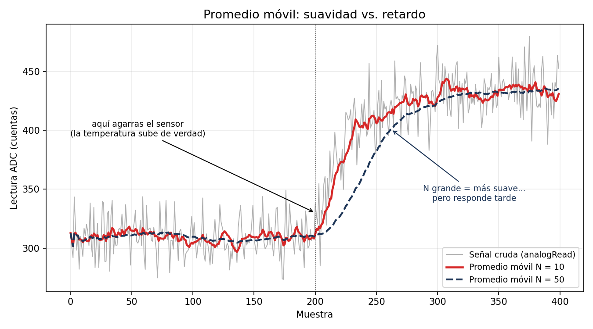
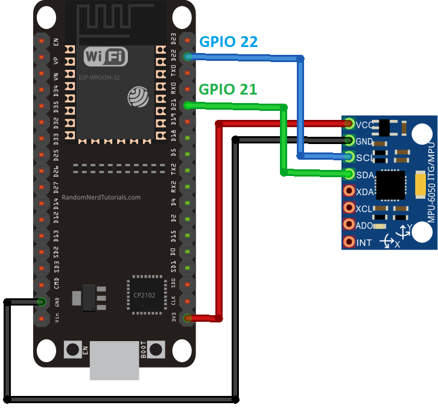

Sensores 101
Objetivo: Leer sensores analógicos y digitales con el ESP32, calibrarlos contra una referencia, filtrar el ruido con un promedio móvil y documentar curvas de calibración — la base de cualquier sistema de instrumentación.
Materiales
- ESP32 DevKit V1 + protoboard y jumpers.
- Potenciómetro de 10 kΩ.
- LM35 (sensor de temperatura analógico).
- Acelerómetro MPU6050 (módulo I2C). (Si tu módulo es analógico tipo ADXL335, ve la nota al final.)
- Termómetro de referencia (el de la app del clima no cuenta; uno ambiental o infrarrojo del laboratorio).
1. La cadena de medición
Todo sensor sigue la misma cadena:
flowchart LR
F[Fenómeno físico<br>temperatura, giro, luz] --> S[Sensor<br>lo convierte a voltaje] --> ADC[ADC del MCU<br>voltaje a número] --> SW[Software<br>número a unidades reales]El trabajo de instrumentación es cada flecha: entender qué hace el sensor, qué hace el ADC y qué cálculo convierte el número crudo en °C, grados o m/s².
2. El ADC del ESP32
- Resolución: 12 bits → valores de 0 a 4095.
- Rango: 0 a 3.3 V (con la atenuación por defecto).
- Conversión a voltaje:
Qué pines usar
Usa los pines de ADC1: GPIO 32, 33, 34, 35, 36, 39. Los de ADC2 dejan de funcionar cuando el radio (WiFi/Bluetooth) está activo — y nuestro carro usa Bluetooth, así que ADC2 está prohibido en este curso. Recuerda además que 34, 35, 36 y 39 son solo entrada.
El ADC del ESP32 no es perfecto
Cerca de 0 V y cerca de 3.3 V la respuesta se aplana (no es lineal en los extremos). Por eso calibramos contra una referencia en lugar de confiar ciegamente en la fórmula. Verlo en tus propias curvas es parte de la práctica.
3. Potenciómetro: tu primera "perilla"
Un potenciómetro es un resistor variable: al girar la perilla mueves un contacto sobre una pista resistiva y formas un divisor de voltaje.
Conexión: extremo 1 a 3.3 V, extremo 2 a GND, pin central (wiper) al GPIO 34.

const int pinPot = 34; // ADC1, solo entrada
void setup() {
Serial.begin(115200);
}
void loop() {
int crudo = analogRead(pinPot); // 0 - 4095
float volt = crudo * (3.3 / 4095.0); // a voltaje
// Escalado a un rango útil, dos formas:
int porcentaje = map(crudo, 0, 4095, 0, 100); // enteros
float angulo = crudo * (270.0 / 4095.0); // float (giro típico de un pot: 270°)
Serial.print("crudo: "); Serial.print(crudo);
Serial.print(" volt: "); Serial.print(volt, 3);
Serial.print(" %: "); Serial.print(porcentaje);
Serial.print(" angulo: "); Serial.println(angulo, 1);
delay(100);
}
Conexión con el proyecto
Este mismo escalado (map de un rango a otro) es el que usarás para convertir comandos de velocidad en PWM del carro. Y en el torneo, un potenciómetro puede ser tu "perilla de velocidad máxima" para pruebas.
4. LM35: temperatura con calibración
El LM35 entrega 10 mV por cada °C: a 25 °C su salida es 0.25 V. La conversión teórica es directa:
El LM35 se alimenta con 5 V, no con 3.3 V
El LM35 requiere mínimo 4 V de alimentación (hoja de datos: 4–30 V). Aliméntalo desde el pin VIN/5V del DevKit. Su salida es segura para el ADC: a temperaturas normales nunca pasa de ~0.5 V (50 °C), muy por debajo de los 3.3 V del ESP32.
Conexión: viendo el lado plano del TO-92 de frente: izquierda = +5 V (VIN), centro = salida → GPIO 35, derecha = GND. Si lo conectas al revés se calienta de inmediato — desconecta y revisa.

const int pinLM35 = 35;
void setup() {
Serial.begin(115200);
}
void loop() {
int crudo = analogRead(pinLM35);
float volt = crudo * (3.3 / 4095.0);
float tempC = volt * 100.0; // 10 mV/°C
Serial.print("ADC: "); Serial.print(crudo);
Serial.print(" V: "); Serial.print(volt, 3);
Serial.print(" T: "); Serial.print(tempC, 1);
Serial.println(" C");
delay(500);
}
4.1 Tabla de calibración (el entregable)
La fórmula teórica supone un ADC perfecto — que ya sabemos que no lo es. Vamos a calibrar contra una referencia:
- Toma al menos 5 puntos a distintas temperaturas: ambiente, sensor entre los dedos, cerca de una lámpara, junto a algo frío (lata fría; sin mojar el sensor), etc.
- En cada punto, espera a que la lectura se estabilice y registra tres columnas:
| Punto | T referencia (°C) | Lectura ADC | T calculada (°C) | Error (°C) |
|---|---|---|---|---|
| Ambiente | ||||
| Entre dedos | ||||
| Lámpara | ||||
| Lata fría | ||||
| Otro |
- Grafica T referencia vs. lectura ADC (en Excel, Sheets o Python). Esa es tu curva de calibración.
- Linealización básica: ajusta una recta \( T = m \cdot ADC + b \) a tus puntos (línea de tendencia en la hoja de cálculo). Sustituye la fórmula teórica por tu recta en el código y verifica que el error baja.
Para tu bitácora
¿Tu recta calibrada tiene la pendiente que predice la teoría? ¿Dónde se desvía más: en frío o en caliente? ¿Qué dice eso del ADC del ESP32?
5. Ruido y promedio móvil
Deja el LM35 quieto y observa el monitor serial: la lectura baila aunque la temperatura no cambie. Eso es ruido. El filtro más simple y usado: promediar las últimas N muestras.

const int pinSensor = 35;
const int N = 10; // tamaño de la ventana
int buffer_[N];
int indice = 0;
long suma = 0;
bool lleno = false;
float promedioMovil(int nuevaLectura) {
suma -= buffer_[indice]; // saca la muestra más vieja
buffer_[indice] = nuevaLectura;
suma += nuevaLectura; // mete la nueva
indice = (indice + 1) % N;
if (indice == 0) lleno = true;
return suma / float(lleno ? N : indice);
}
void setup() {
Serial.begin(115200);
for (int i = 0; i < N; i++) buffer_[i] = 0;
}
void loop() {
int crudo = analogRead(pinSensor);
float filtrado = promedioMovil(crudo);
// Imprime ambos para graficarlos juntos en el Serial Plotter
Serial.print(crudo);
Serial.print(" ");
Serial.println(filtrado);
delay(50);
}
Míralo con el Serial Plotter
En Arduino IDE: Herramientas → Serial Plotter. Verás dos líneas: la cruda (nerviosa) y la filtrada (suave). Una captura de esa gráfica es evidencia perfecta para tu portafolio.
El precio del filtro: entre más grande la ventana N, más suave la señal… pero más lento responde a cambios reales. Prueba N = 3, 10 y 50 y anota la diferencia. Este compromiso suavidad-vs-retardo te lo vas a volver a encontrar en el PID (la derivada odia el ruido) y en visión.
6. Acelerómetro MPU6050: inclinación e impactos
El MPU6050 mide aceleración en 3 ejes (y giro, que hoy no usaremos). No es analógico: se comunica por I2C, un bus digital de dos cables.
Conexión (I2C):
| MPU6050 | ESP32 |
|---|---|
| VCC | 3.3 V |
| GND | GND |
| SDA | GPIO 21 |
| SCL | GPIO 22 |

Instala la librería Adafruit MPU6050 (Gestor de librerías; instala también sus dependencias cuando lo pida).
#include <Adafruit_MPU6050.h>
#include <Adafruit_Sensor.h>
#include <Wire.h>
#include <math.h>
Adafruit_MPU6050 mpu;
void setup() {
Serial.begin(115200);
if (!mpu.begin()) {
Serial.println("No se encontro el MPU6050 (revisa SDA/SCL y alimentacion)");
while (true) delay(100);
}
mpu.setAccelerometerRange(MPU6050_RANGE_8_G);
}
void loop() {
sensors_event_t a, g, temp;
mpu.getEvent(&a, &g, &temp);
float ax = a.acceleration.x;
float ay = a.acceleration.y;
float az = a.acceleration.z;
// Inclinación (roll y pitch) a partir de la gravedad
float roll = atan2(ay, az) * 180.0 / PI;
float pitch = atan2(-ax, sqrt(ay * ay + az * az)) * 180.0 / PI;
// Magnitud total: en reposo ~9.81 (la gravedad). Un pico = golpe.
float magnitud = sqrt(ax * ax + ay * ay + az * az);
bool impacto = fabs(magnitud - 9.81) > 15.0; // umbral en m/s^2, ajústalo
Serial.print("roll: "); Serial.print(roll, 1);
Serial.print(" pitch: "); Serial.print(pitch, 1);
Serial.print(" |a|: "); Serial.print(magnitud, 2);
if (impacto) Serial.print(" *** IMPACTO ***");
Serial.println();
delay(100);
}
Experimentos:
- Inclina la protoboard y verifica que roll/pitch corresponden (usa el nivel del celular como referencia — ¡otra calibración!).
- Dale un golpecito a la mesa y observa el pico de magnitud. Ajusta el umbral hasta que detecte golpes reales sin falsas alarmas.
- Aplica el promedio móvil de la sección 5 a roll/pitch y compara.
Conexión con el proyecto
Montado en el carro, el MPU6050 detecta choques (¿faul en el torneo?) e inclinación (¿el carro está volcado?). Guárdalo en tu caja de herramientas para el proyecto final.
¿Tu acelerómetro es analógico (ADXL335)?
Entonces no usa I2C: entrega tres voltajes (X, Y, Z) que se leen con analogRead en tres pines de ADC1, igual que el potenciómetro. Sensibilidad típica: ~300 mV/g centrado en Vcc/2. La inclinación se calcula con el mismo atan2 de arriba, usando los valores en g.
7. Entregables de la sesión (van al portafolio)
- Curvas de calibración del potenciómetro (ADC vs. ángulo/posición) y del LM35 (T referencia vs. ADC), con su recta ajustada.
- Tablas de datos completas con errores.
- Captura del Serial Plotter mostrando señal cruda vs. filtrada, con tu elección de N justificada.
- Código comentado en el repositorio, con README breve de conexiones.
- Bitácora: qué falló, qué te sorprendió (¿el ADC es tan lineal como prometía?).
Glosario rápido
- ADC: convertidor analógico-digital; voltaje → número.
- Resolución: cuántos pasos distingue el ADC (12 bits = 4096 pasos).
- Calibración: comparar contra una referencia confiable y corregir.
- Linealización: sustituir la fórmula teórica por una recta ajustada a tus datos.
- Promedio móvil: filtro que promedia las últimas N muestras.
- I2C: bus digital de 2 cables (SDA/SCL) para sensores "inteligentes".